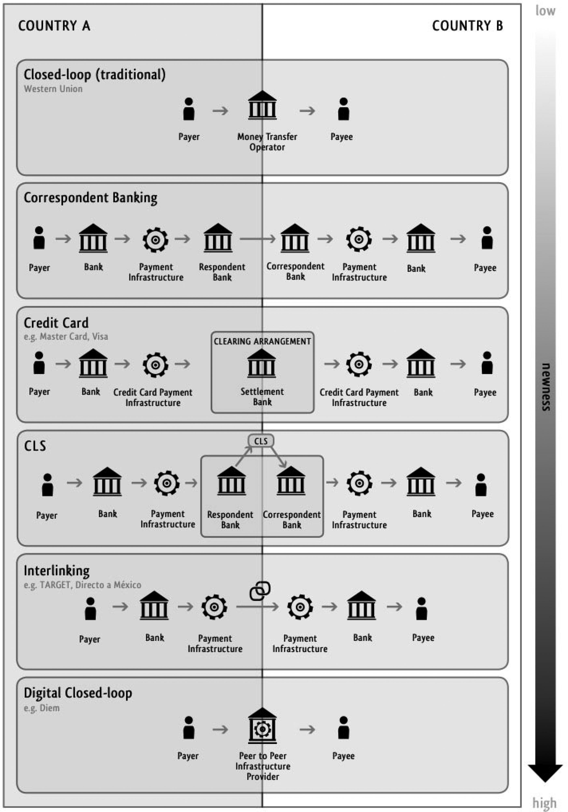

17 Global Payment Infrastructure
Brandl Abstract
Despite the narrative of a globalized economy, there is no effectively working global payment system. Although there is an infrastructure that allows the transmission of data about global payments, the movement of actual money is executed indirectly, making it an incalculable endeavor. The reason is that money is not simply data, but a complex bundle of rights closely tied to the nation state. In the absence of infrastructure that reliably links payments with guarantees of the nation state, intermediaries that facilitate global payments are forced to create trust in a different way. This is only possible by occupying a highly centralized and therefore powerful position. In this article, we investigate which actors were historically able to hold such a position and how these actors are challenged by digitalization. We suggest that there are three models of payment infrastructure provision. Bank-based systems were dominant until the 1980s, but in the following decades, a second model emerged: the provision of financial infrastructure by global companies. Since the early 2000s, we see a third model: the entrance of tech-driven companies in the payment sector. We conclude that digital technologies will not necessarily solve the problems, but might in fact exacerbate them.
Brandl Memo
The difficulties in making cross-border payments leads us right into the heart of questions about the substance of modern money and the role of nation states in its production. Ingham (2004) describes money as a private-public partnership. The object of this partnership is a constant struggle between three main groups of actors: governments, the people (the taxpayers), and rentiers and their banks. At the core of this conflict lies the question, ‘What counts as money at all?’ since this question is crucial for the contemporary distribution of wealth
In this article, we claim that financial infrastructure is a mostly ignored2 but crucial component of the puzzle of ‘what counts as money’, since only this infrastructure can execute the private-public partnership in everyday life. Such infrastructure ensures that the guarantees provided by the nation state in its own currency area are not mere promises; it links these promises to day-to-day payments in commercial bank money. This material underpinning linking payments with the promises of the nation state is absent in the global context and, therefore, cross-border payments have a very different nature than domestic payments.
Through the absence of infrastructure that reliably links payments with the guarantees of the nation state, intermediaries that facilitate global payments are forced to create trust in a different way. In this article we will show how these preconditions lead to the development of powerful intermediaries in the global payment industry that are able to dictate the conditions of cross-border payments.
Only through infrastructures can the promise of the nation state be linked across time and space.
Financial infrastructures might seem to be a monolithic bloc, they are actually provided by a broad range of actors and institutions. The main difference is between those focusing on the settlement of payments and those focusing on the settlement of securities.
The provision of infrastructures for payments, which is regarded as part of the critical infrastructure of a nation state equal to that of energy, water supply, food and agriculture, healthcare or transportation and is, therefore, closely linked to political regulation.
The expectation of the stability of the value of money has a temporal and a spatial dimension.
Money in capitalist societies is much more than data; it is a bundle of rights related to expectations about temporal and spatial value stability that are tied to guarantees provided by the nation state.
The generation of trust that ensures stable monetary value has at least two dimensions: temporal and spatial.
Scholars of economic history have extensively studied the establishment of national currencie. Four motivations drove the early nation states to create territorial currencies: (1) the creation and fostering of domestic markets; (2) the desire to control the domestic money supply; (3) the wish to link currency with fiscal policy; and (4) the strengthening of national identity. The process of the establishment of national currencies, however, did not go as smoothly as expected. The declaration of a currency as legal tender by a nation state does not preclude the existence of another currency. Consequently, currency or monetary pluralism is regarded not as an exception but as a characteristic of modern currency systems.
Alongside their critique of a single uniform national currency, anthropologists in particular have long studied the plurality of economic spheres and currencies and the difficulties of transferring values from one sphere to the other. This is true not only for tribal society but also for modern capitalist societies.
Infrastructure: the link between the temporal and spatial dimensions of money.
One major component of the Fed was the establishment of the Gold Settlement Fund, which enabled the member banks to settle their reciprocal claims with central bank money. The costs of shipping gold between the various banks were reduced to zero, and therefore payments at par became possible.
Markets as one of the fundamental institutions of capitalism function precisely because fragmented actors come together to compete. However, these decentralized encounters are based on a (financial) infrastructure that must be as frictionless as possible, i.e. centralized.
The first challenge in setting up financial infrastructure is consequently that competing companies must establish institutions that are able to uphold their trust in one another. Second, all actors involved must jointly provide the technological infrastructure capable of handling such a complex operation and enforce universal standards such as accounting systems. The problems that typically arise in this context are similar to those that generally come up in the provision of public goods: on the one hand, suboptimal incentive structures, which systematically lead to undersupply in the case of the private provision of a public good; and on the other hand, the occurrence of strong network effects which reinforce concentration tendencies.
Traditionally, the advice for industries with these tendencies has been that the state should be responsible for their provision. However, unlike other industries with a similar structure, such as telecommunication providers or providers of public utilities, the provision of financial infrastructure was only occasionally managed solely by the nation state.
why does the primarily private provision of infrastructure work in the finance sector, while it fails in other industries? One key reason for this might be that payment infrastructure can be provided as a club good such that non-paying actors can be excluded. It is important to understand that this ‘club’ of commercial banks that provide infrastructure is deeply dependent on the close cooperation between private actors and state actors that provide oversight over the financial infrastructure as well as settlement infrastructures, which connect the privately provided infrastructures.
The private-public partnership that constitutes modern money is executed through public infrastructure, which is reliably linked to the infrastructure of networks of commercial banks. These infrastructures, which are run by central banks, are able to link day-to-day payments with the guarantees of the nation state by providing an infrastructure that allows banks to settle their reciprocal claims with central bank money.
The trust of all participants in payment infrastructures that emerge naturally in the domestic context is built on the basis of the fact that central bank money is the safest possible asset; for cross-border transactions this trust has to be produced by other means.
Clearing houses act as central counterparties (CCP), which means that they assume guarantees for their members in the event of default. To be able to do this properly, the clearing houses require large commitments from their members, usually in the form of reserves deposited with the central bank. In addition, the members are often subject to the regulations of the central counterparty (Interview 14). In this way, the central counterparties not only minimize the individual members’ risk, but also reduce the systemic risk of the entire financial sector by homogenizing the individual credit risks, as all members are jointly liable for losses.
The transformation of one money into another money is not a simple and frictionless process. This is especially true for cross-border payments, since money is not only data but a bundle of rights that is tied to the guarantees of the respective nation state. This bundle of rights cannot be exchanged as such, since the essence of global transactions is that they leave the borders of the nation state. The only possibility is, therefore, that a powerful intermediary is able to bridge this gap.
Credit card companies, as well as other companies such as the Society for Worldwide Interbank Financial Telecommunication (SWIFT), do not supersede the nationally based infrastructures; rather, they are deeply dependent on them. SWIFT, a company that emerged from the association of commercial banks, provides an infrastructure for banks to send and receive messages about financial transactions.
Credit card companies provide international clearing arrangements, which means they provide the data that allows settlement, but the actual movement of money is carried out by a few major settlement banks. The role of these banks cannot be underestimated. For example, the entire settlement process for Visa (the largest credit card company) is done by Chase Manhattan Bank, which technically becomes a correspondent bank or handles the transactions through its subsidiaries.

Figure: Cross-border Payments
Banks handle their international transactions via correspondent banks or via their subsidiaries. Correspondent banking is a bilateral agreement between two banks in different countries by which one of them provides services to the other by holding an account (nostro or vostro account) owned by the respective other bank. These agreements enable the respondent bank in Country A to participate in the payment systems of Country B. There are only a few major banks that provide these services globally.
while the settlement of domestic transactions is typically done with central bank money (the safest possible asset), the settlement of FX transactions involves commercial bank money.
The time lag between a currency payment and receipt of the currency being bought creates a risk exposure for the selling party: the risk that the delivery is late (liquidity risk) or in the worst case does not occur at all (credit risk). Although these types of risk also exist in domestic transactions, the risk that goes along with FX transaction settlements is higher.
This service comes with a price: the provision of infrastructure by an oligopoly of private companies.
Since the late 1990s, at least two innovations have enhanced the speed and lowered the cost of cross-border trades between the countries of the Global North. To reduce the risk exposure of cross-border payments, a network that consists of around 70 financial institutions established a settlement system (see Figure 1) for cross-border payments: CLS (continuous linked settlement). While the settlement provided by central banks is done with central bank money, the settlement in the CLS system is executed by the CLS Bank with a ‘payment vs. payment’ system that reduces the risk exposure for the involved parties. However, CLS only settles in 17 currencies8 of countries of the Global North as well as some emerging economies. FX transactions with minor or exotic currencies are still only possible via correspondent banks, and therefore even more incalculable and hence expensive.
Traditional closed-loop systems (or money transfer operators) such as Western Union have their own proprietary, quite opaque network of banks, exchange bureaus, post offices, and other intermediaries – like retail outlets, cell phone centers, travel agencies, drug stores, and gas stations – to deliver remittances.
In the Eurozone and a few other regions,10 we see a second innovation emerging from attempts by nation states to bridge the national financial infrastructures and build interlinking models (see Figure 1). In the context of the integration of the European capital market, one major step was the harmonization of the providers of financial infrastructure, which was done through TARGET 2 (Trans-European Automated Real-time Gross Settlement Express Transfer System) that was implemented between 2006 and 2017. The core of the Target system is a platform which allows all central banks of the euro system to settle their euro payments in real time. The Single Shared Platform is operated by the three major central banks: France (Banque de France), Italy (Banca d’Italia) and Germany (Bundesbank). Although the Bank for International Settlements (Bech et al., 2020) sees great promise for the interlinking model, global companies continue to dominate infrastructure provision.
In the European Union (EU), we see a massive regulatory push to disaggregate the value chain of the payment sector by promoting digital technology (Interviews 11 & 16). This process is closely tied to the revision of the 2015 directive on payment services (PSD2), which aimed to open up the market for payment services. The core of this directive is that banks are required to grant other providers access to their customers’ account data. As a result, the business models of the providers of digital payment systems were strengthened. The initial aim behind this initiative was to challenge the cartel of credit card companies from the European side (Stiefmüller, 2020). Guaranteed access to consumer data should foster competition in the market for payment services and should at best trigger the foundation of a European equivalent to PayPal. This initiative of the European Commission was almost exclusively motivated by competition law and supply-side concerns, but comes with a price tag: the limitation of data protection and the potentially related violation of privacy (Stiefmüller, 2020, p. 299). The exclusion of data protection concerns in the PSD2 directive is presumably due to fact that the EU regulators want to establish an economic area that can compete with the US to spawn innovation.
Both trends, the wave of digitalization in the financial sector and the regulatory push to promote these digital technologies, made the financial sector attractive for new types of players: startups and, of course, big tech companies such as Apple, Amazon and Facebook. The payment sector is particularly interesting for these companies because it produces highly attractive raw material: transactional data.
Platformization of financial transactions: The big tech companies aim to integrate payment systems in their platforms to gain access to this highly valuable transactional payment data and to increase the time customers stay on their platforms. However, the key question is whether this development affects the oligopolistically provided financial infrastructure that now executes global payments.
The first company working this way on the front end was PayPal, founded in 1998.12 It was over a decade later when the large wave of startup formations in the payment sector began. As of 2021, the most successful actors in this field are startups such as Klarna or iZettle13 as well as the big tech companies that provide financial services such as Apple Pay and Google Pay.
We know from the example of the credit card companies that the market of payment providers develops strong network effects and, therefore, the further consolidation of the market is very likely.
In addition to tech-driven companies that provide financial services without becoming banks themselves, we can identify a second, much more radical strategy: the (almost) complete detachment of financial services from banks via the establishment of closed-loop systems. Although digital closed-loop systems emerged only recently, the principle is much older. More traditional remittance companies such as Western Union work on the same principle but require a physical presence in every jurisdiction. By contrast, digital closed-loop systems are based on digital currencies which are created by the networks themselves. The first attempt to establish such a digital closed-loop system for cross-border payments was made by Ripple. On the basis of distributed ledger technology14 Ripple creates its own currency (XRP), which is used for settlement.
Digital closed-loop systems are able to provide infrastructure that is able to move money. However, rather than actual currencies that are legal tender, these systems move their own digital currencies that eventually have to be exchanged in the currency of the respective country.
The risks associated with digital, proprietary closed-loop systems are evident. First, since these systems were established outside the highly regulated state–bank nexus, the lack of supervisory oversight might fail to identify shortcomings in risk management. The second concern is much more fundamental. Digital closed-loop operations may drive fragmentation through non-compatible payment systems within an economy.
While Ripple’s ultimate goal is to revolutionize the global interbank market by convincing banks to join the Ripple network, we see initiatives from the big tech companies in the US to establish digital closed-loop systems for end users. In one of the best-known examples, Facebook founder Mark Zuckerberg announced plans to launch the digital currency Diem (originally called Libra) in cooperation with other companies.
Although Diem is based on a blockchain, it differs significantly from other cryptocurrencies such as bitcoin. In contrast to the majority of the existing cryptocurrencies, Diem is based on a permissioned blockchain, where only accepted members can participate. A second important difference is that the Diem blockchain does not create new value. Instead, the value on the Diem blockchain is fixed to that of existing currencies (so called stablecoins), and all values are fully backed by money that is deposited into Diem Reserve. The Reserve exclusively relies on high-quality liquid assets or assets that can be easily converted into high-quality liquid assets.
Although China is outside of the scope of our analysis it is important to note that while most projects of western tech companies are still under development, these capabilities are already developed in China and other Asian countries. For example, a handful of companies in China, such as Alibaba’s Alipay or Tencent’s WeChatPay, provide digital infrastructures that link social media, commerce and banking, which work almost independently from banks. Next to these initiatives in the private sector, the efforts of China’s central bank to provide a digital payment version of China’s fiat currency – the Renminbi – are much further developed than comparable projects in the U.S. or Europe
The vast majority of attempts by tech-driven companies to transform the payment industry only affects the front end of banking and therefore leaves the role of major banks untouched.
The power of this club of major banks does not affect all actors in the same way. Powerful actors such as global companies are able to establish private solutions to bypass this problem via corporate treasury functions through their subsidiaries.
So far, digital technology, especially blockchain, has not challenged the concentration of power in only a few major players that are able to provide global financial infrastructure; instead it appears to strengthen existing intermediaries.
The resistance of the banking sector to disruptive changes driven by digital technology shows that the establishment of financial infrastructure is not as simple as the big tech companies might have thought. Banks and their organically grown infrastructures seem to have some advantages that cannot be easily copied by tech-driven companies. The reason for this might point to the characteristics of infrastructure, which are not purely technological arrangements, but as such evolving socio-technical systems which combine human and non-human elements for the provision of key functions in global finance.
Infrastructures are never neutral; they maintain the power relationships which are inscribed in their construction.
Only powerful actors are able to build up enough trust to settle reciprocal claims with commercial bank money or, in the case of CLS and Ripple, with tokens they have created by themselves.
The attempts of central banks to introduce digital central bank currencies might lead in the right direction. For example, the introduction of the Digital Euro might open up the possibility for participants outside of the EU to have access to central bank money. This would mean a big step in creating a global infrastructure that is actually able to move money and not only data. The consequences of an increase in euro-denominated assets outside of the EU, on the other hand, are completely unpredictable at this point. It is, therefore, not clear if this step is really desirable or whether it would ultimately break the exclusivity of the current infrastructure and make cross-border transactions more frictionless and less costly for everyone.